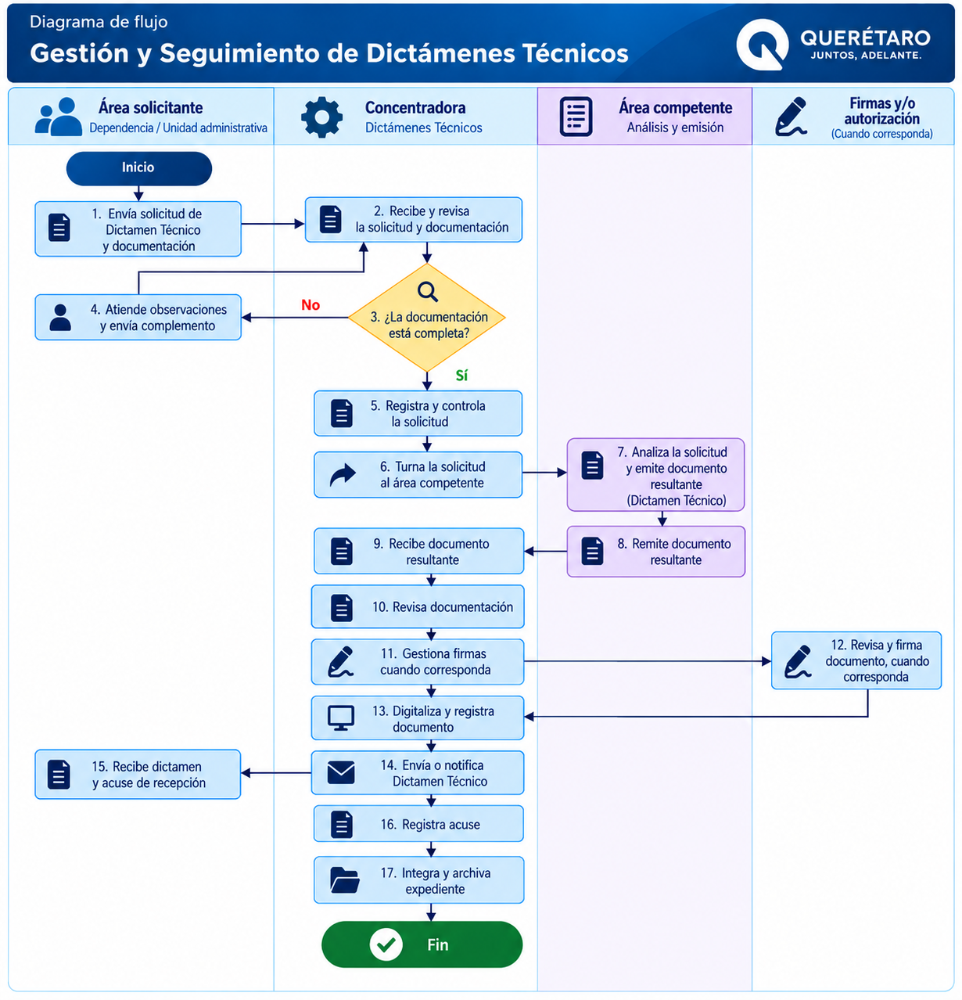

Gestión y Seguimiento de Dictámenes Técnicos
Procedimiento para recibir, registrar, controlar y dar seguimiento a las solicitudes de Dictamen Técnico, manteniendo su trazabilidad documental hasta la notificación y archivo del resultado.
Objetivo
Establecer las actividades para recibir, registrar, controlar y dar seguimiento a las solicitudes de Dictamen Técnico, manteniendo la trazabilidad documental desde su recepción hasta la emisión, notificación y archivo del resultado correspondiente.
Participantes
Requisitos para iniciar
La solicitud deberá contar con la documentación soporte y la información técnica requerida de acuerdo con el tipo de trámite.
Solicitud correspondiente al trámite que será gestionado.
Documentación correspondiente que sustenta la solicitud.
Información requerida de acuerdo con el tipo de solicitud.
Procedimiento
Secuencia para la gestión y seguimiento documental de Dictámenes Técnicos.
Recepción de solicitud
Se recibe la solicitud de Dictamen Técnico y su documentación soporte.
Revisión documental
Se revisa que la documentación necesaria se encuentre integrada.
Registro de la solicitud
La solicitud se registra en los mecanismos de control utilizados por el área.
Registro o seguimiento en SIGNA
Cuando corresponda, se realiza su registro o seguimiento mediante SIGNA.
Clasificación
Se clasifica la solicitud conforme al tipo de trámite correspondiente.
Turno para atención
La documentación se turna al área o personal competente para su atención.
Seguimiento
Se mantiene seguimiento al estado de la solicitud.
¿Se requiere información adicional?
Cuando se requiera información adicional o corrección documental, se gestiona con el área solicitante.
Punto de validaciónDocumento resultante
Una vez atendido el análisis correspondiente, se recibe o integra el documento resultante.
Revisión administrativa
Se realiza la revisión administrativa y documental correspondiente.
Gestión de firmas
Cuando proceda, se gestionan las firmas necesarias.
Digitalización y registro
El documento final se digitaliza y registra conforme a los controles establecidos.
Notificación del resultado
Se realiza el envío o notificación del resultado al área o dependencia correspondiente.
Acuse de recepción
Se obtiene y registra el acuse de recepción, cuando aplique.
Integración del expediente
La documentación se integra al expediente correspondiente.
Archivo
El expediente se archiva conforme al mecanismo de organización establecido por el área.
Validaciones
La Concentradora realiza la gestión y seguimiento administrativo de la solicitud. El análisis o emisión técnica corresponde al área o personal competente.
Resultado esperado
Solicitud de Dictamen Técnico atendida y controlada documentalmente, con trazabilidad desde su recepción hasta la notificación y archivo del resultado.
Registros y evidencias
Diagrama de flujo
Gestión y Seguimiento de Dictámenes Técnicos

Selecciona el diagrama para visualizarlo en tamaño completo.